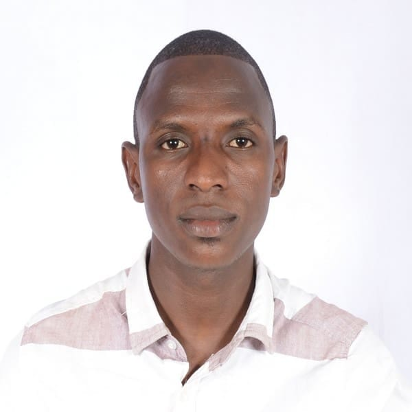

Summary

Abdoulaye Diallo
Sotfware Engineer
I create web and mobile application, and take in the design
and adds online such as Facebook adds, Instergram adds and Youtube adds.
Education
- 2024: Computer Sciences at BMCC
- 2010-2013: Lycée Filima de Kamsar Mathematical Sciences.
- Diploma obtained: single baccalaureate
- 2006-2010: Nasroul Islam of Kamsar
- 2000-2006: Franco Arabe School of Kolly
Work experiences
- From October 15, 2015 to May 10, 2019: Co-founder, IT and Human Resources Manager
Bill Gates Professional Computing Center (CIPROB) Conakry-Ratoma-Yattaya
Missions and tasks carried out: Ensure IT Security Hardware and software maintenance
Leadership and resource management (human, material and financial)
All services related to the internet and making documents Translation of documents
Training in multimedia, Adobe, internet, Access, analysis
- In 2019 : IT Trainer for three (3) months the SOS DREPANO-GUINEA
medical team
- In 2018 project carried out for : AFIA SCHOOL in CONAKRY / RATOMA / YATTAYA
Creation of the school logo and ID Cards creation of a database for
personnel management and calculation of school grades on Access and Excel
Video montage of school festivities
- Since 2017: Vice-president of AJDRP (Association of Young
Nationals of Donbé)
- Missions and tasks carried out :
Development of the association document
The design of its logo, member card and administer its Facebook page.
Skills
-
Training in digital literacy
-
Training in Graphic design
-
Training in Microsoft Offices